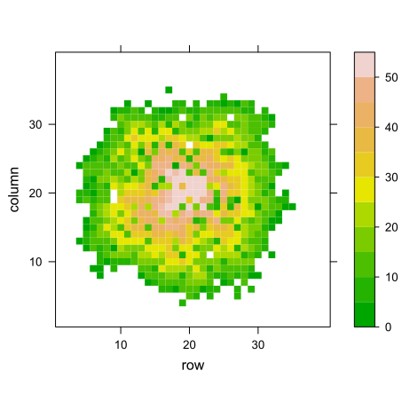
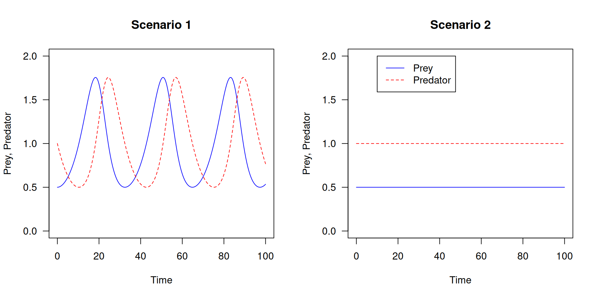
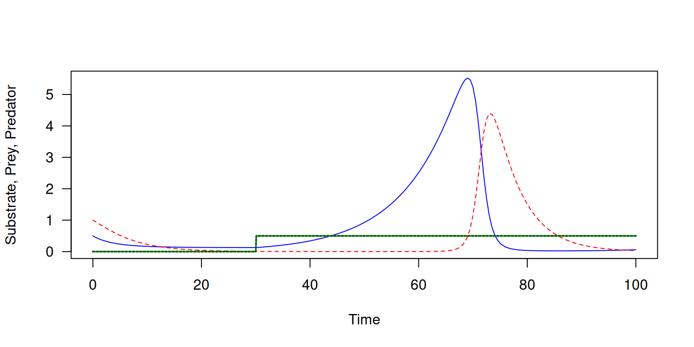
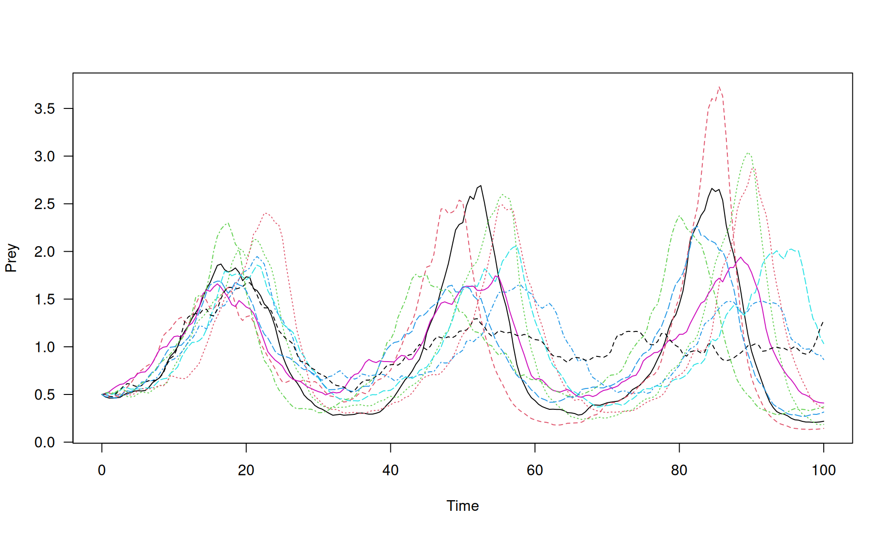
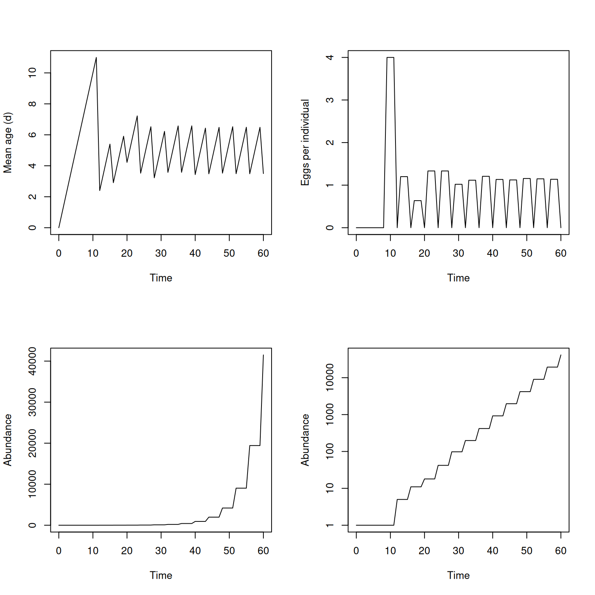
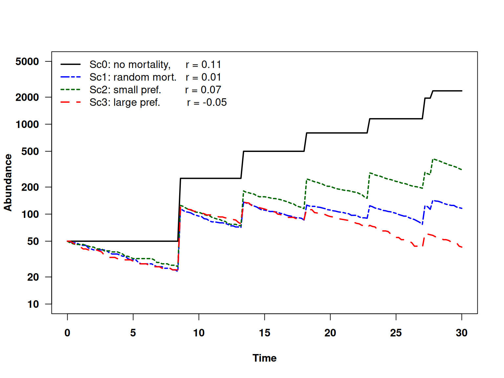

1. simecol: An Object-Oriented Framework for Ecological Modeling in R (JSS Paper)
Source:vignettes/a-simecol-introduction.qmd
Abstract
The simecol package provides an open structure to implement, simulate and share ecological models. A generalized object-oriented architecture improves readability and potential code re-use of models and makes simecol-models freely extendable and simple to use. The simecol package was implemented in the S4 class system of the programming language R. Reference applications, e.g., predator-prey models or grid models are provided which can be used as a starting point for own developments. Compact example applications and the complete code of an individual-based model of the water flea Daphnia document the efficient usage of simecol for various purposes in ecological modeling, e.g., scenario analysis, stochastic simulations and individual-based population dynamics. Ecologists are encouraged to exploit the abilities of simecol to structure their work and to use R and object-oriented programming as a suitable medium for the distribution and sharing of ecological modeling code.
Citation
A previous version of this document has been published as Petzoldt and Rinke (2007) in the Journal of Statistical Software, https://www.jstatsoft.org/v22/i09. Please refer to the original publication when citing this work.
1 Introduction
The R system with the underlying S programming language is well suited for the development, implementation and analysis of dynamic models. It is, in addition to data analysis, increasingly used for model simulations in many disciplines like pharmacology (Tornø et al. 2004), psychology (Maas et al. 2006), microbiology (Jensen et al. 2006), epidemiology (Hartley et al. 2006), ecology (Fussmann et al. 2003; Rinke and Vijverberg 2005; Levey et al. 2005) or econometrics (Cribari-Neto and Zarkos 1999; Zeileis et al. 2005). Existing applications already cover a range from small conceptual process and teaching models up to coupled hydrodynamic-ecological models (Rolinski et al. 2005). Small models can be implemented easily in pure R (Petzoldt 2003) or by means of the XML-based Systems Biology Markup Language SBML and the corresponding Bioconductor package (Radivoyevitch 2004). For more complex or computation-intensive simulations, R is primarily used as an environment for data management, simulation control and data analysis, while the model core may be implemented in other languages like C/C++, FORTRAN or Java.
This works perfectly at the extremes, but problems appear with medium-sized models. While larger modeling projects usually start with an extensive planning and design phase carried out by experienced people, small models can be implemented ad hoc without problems in R from scratch or by modification of online help examples. On the other hand, medium-sized applications often start by extension of small examples up to ever-increasing size and complexity. An adequate design period is often skipped and at the end of a modeling project no time remains for re-design or appropriate documentation. The resulting programs are necessarily ill-structured in most cases or at least exhibit a very special, proprietary design.
The situation is even worse in ecological modeling, because this discipline is broad, modeling strategies vary substantially and ecological modelers are very creative. Different families of models (e.g., statistical, differential equations, discrete event, individual-based, spatially explicit) are applied alone or in mixtures to different ecological systems (terrestrial, limnetic, marine) and scales (individuals, laboratory systems, lakes/rivers/forests, oceans, biosphere). Not enough that there is a Babel of programming languages and simulation systems, there is also a Babel of approaches. There are often cases where it seems to be necessary to understand the whole source code when one tries to modify only one single parameter value or to introduce a new equation and it is not seldom easier to re-write code from scratch than to reuse an existing one.
We aim to propose a possible way out of the dilemma: an open structure to implement and simulate ecological models. The R package simecol is provided to demonstrate the feasibility of this approach including a starter set of examples and utility functions to work with such models.
After giving a description of the design goals and the specification of the simObj class in Section 2 and Section 3, we demonstrate basic use of the package in Section 4. The different mechanisms available to implement and simulate simObj models are explained in Section 5. A complete individual-based model is given in Section 6 to elucidate how to use and extend simecol in the modeling process. Finally, we discuss perspectives of R and simecol in ecological modeling as well as relations to other packages (Section 7).
2 Design goals
Our first goal is to provide a generalized architecture for the implementation of ecological models. Such a unified style, which can be considered as a template or prototype of model implementations, provides manifold advantages for a scientific community. The structured architecture will increase readability of the code by separating model equations from other code elements, e.g., for numerical techniques. This will enable ecological modelers to use R as a communication medium and allows distributing model source code together with its documentation, e.g., as an executable part of the “standard protocol for describing individual-based and agent-based models” suggested by Grimm et al. (2006).
We want to stress that we do not intend to establish yet another simulation system. Complete simulation systems are numerous and well-established for specified applications, e.g., STELLA1, Berkeley Madonna2, VENSIM3, EcoBeaker4 or the GNU open source system ECOBAS (Benz et al. 2001). A comprehensive overview of software used in ecological modeling is given elsewhere, e.g., at https://www.systemdynamics.org/ or Chapter 8 of Grimm and Railsback (2005). These simulation systems can be extremely effective for the specific class of applications they are intended for, but they often lack the full power and flexibility of a programming language. In such cases, model frameworks or simulation libraries are commonly used to support one specific model family, e.g., Pascal templates for ordinary differential and delay-differential equations (Gurney and Nisbet 1998), an object-oriented C++ framework like OSIRIS (Mooij and Boersma 1996) for individual-based models or the Objective-C framework SWARM5 for agent-based simulations.
An alternative approach is the use of high-level programming environments and matrix-oriented languages like MATLAB6 or R (R Core Team 2026). Such languages allow a more interactive development cycle compared to compiled languages, and outweigh their performance handicap by efficient algorithms and compiled libraries for numerics and data management. Both openness and interactivity have made the R system a universal scripting interface for the free combination of a large diversity of applications in statistics and scientific computing.
The second design goal is to be as open as possible and to take advantage of the open philosophy of R. Users should be allowed to employ the full power of R’s graphical, statistical and data management functions and to use arbitrary code written in R or compiled languages. The complete code of simecol-models should be published under a license that minimizes dependence on others and guarantees unrestricted use in science and education, including the possibility to be modified by others. Within this context, simecol is intended to provide a framework on the meta-level identifying structural components of ecological simulation models.
Our third design goal is ease of use and simplicity. One of the main characteristics of programming languages like S and R is that users become programmers (Chambers 2000). Unfortunately, ecologists are commonly not well-trained in programming, which often hampers their application of models. Therefore, we aim to provide a software layer that bridges this gap and helps ecologists to work with models. In consequence, this means for simecol that simplicity of implementation is more important than efficiency. The system should support a broad level of user experience—in our case ecological models covering the whole range from teaching models to research applications.
From the perspective of a first-time user it should be possible to run simulations without knowing too much about R and implementation details. A simulation of an ecological model should be as easy as fitting a linear model in R (see example in Section 3.3.1). A number of memorable “commands”, i.e., a few essential but not overwhelmingly extensive generics for simulation, printing, plotting and data access, and utility functions accompany this package. Both the functions and also the simulation models should have meaningful defaults to enable new users to get almost immediate success and to enable experienced developers to structure their applications and to avoid unnecessary copy and paste (Mächler 2004).
3 Approach
The approach follows directly from the design goals to provide (i) a standardized structure, (ii) open and reusable code and (iii) ease of use of “the model”. It is almost self-evident to apply an object-oriented design, consisting of:
- A general and extensible class description suitable for ecological simulation models that allows subclasses for different model families and multiple instances (objects of class
simObj) which can be used simultaneously without interference. - Generic functions which work on objects of these classes and behave differently depending on the model family they work with.
All equations, constants and data needed for one particular simulation should be included in the model object, with the exception of general and widely needed functions, e.g., numerical algorithms. In the following sections we first analyze what is generally needed and then describe the particular approach.
3.1 State space approach
Most ecological models can be formulated by means of a state space representation, known from statistics and control theory (Figure 1). This applies to dynamic (discrete resp. continuous) systems as well as to static, time-independent systems when postulating that the latter case is a subset. A general description that is valid for both linear and nonlinear systems can be given as:
where is the state of the system and its first derivative, the time, is the input vector (or vector of boundary conditions), and is the output vector. The functions and are the state transition function and the observation function, respectively, which rely on a vector of constant parameters.
A simulation of a dynamic system is obtained by applying a suitable numerical algorithm to the function . This algorithm can be a simple iteration or, when is a system of ordinary differential equations, an appropriate ODE solver or a function giving an analytical solution.
Compared to the usual statistical models in R, ecological models are more diverse in their structure and exhibit tight relationships between procedural code (methods, equations) and data. Non-trivial ecological models are based on more or less modular building blocks (submodels), which are either base equations or complex models themselves.
simObj and related classes. The subclasses and example model objects are provided as reference for user-defined and future extensions.
3.2 The simObj specification
In essence, what do we need to implement a not too narrow class of ecological models? We need self-contained objects derived from classes with suitable properties and methods (data slots and function slots) resulting from the state space description: state variables, model equations and algorithms, model parameters (constants), input values, time steps, the name of an appropriate numerical algorithm (solver), and an optional set of possibly nested sub-models (sub-equations). These parts are implemented as slots of the simObj class from which subclasses for different model families can inherit (Figure 2).
A small set of supporting functions is provided to work with these objects, namely:
- Generic functions for simulation, printing, plotting, slot manipulation (accessor functions) and object creation (
initializefunctions). - Utility functions, e.g., neighborhood relations for cellular automata.
3.3 Generic functions
In the S4 class model of the S language, methods are based on generic functions. They specify the behavior of a particular function, depending on the class of the function arguments (Chambers 2001). All generic functions in simecol are defined as default methods for the class simObj and specific methods exist if necessary for subclasses. If new subclasses are defined for additional model families by the user it may be necessary to create new methods that work with these user-defined data types and provide the required functionality.
3.3.1 Simulation
The core function to work with simObjects is the generic function sim(simObj, ...), which, for dynamic systems, simulates an initial value problem using the initial state, boundary conditions, equations and parameters stored in one particular simObj instance by calling the numerical algorithm referred to by its name in the solver slot of simObj. Common for all versions of sim is the pass-back modification behavior, i.e., a modified version of the original simObj is returned with a newly added or updated slot out holding the simulation results:
The functionality of sim can vary for different subclasses of simObj, e.g., odeModel, gridModel, rwalkModel. This behavior results mainly from a different data structure of the state variables and the set of numerical algorithms that are adequate for a given family of ecological models. Whereas ODE models have a vector for state and a data frame for outputs, grid models may have a grid matrix for state and a list of grids (one grid per time step) as output, and finally, random walk models may have a list for the initial state of the particles and a list of lists for the output.
The returned simObj can be printed and plotted directly with appropriate functions, the simulation results can be extracted with out or the resulting simObj can be used in another simulation with modified data or functionality.
3.3.2 Accessor functions
Similar to the out function, other accessor functions are available for all slots with (in contrast to out) not only read but also write access. These functions are used similarly to the base function names and work with the appropriate data structures; see help files for details. The functions allow changing either the whole content of the respective slot or single elements, e.g., parameter values, time steps or equations. For example, the following will change only the parameter value of k1:
An entirely new parameter is added to the parameter vector via:
Elements can be deleted when a modified version of the parameter vector is assigned:
The behavior is analogous for all other slots with the exception of out, given that the correct data type for the respective slot (vector, list or matrix) is used.
In addition to the command line accessor functions, graphical Tcl/Tk versions exist (editParms, editTimes, editInit)7; however, more complex data types cannot be handled yet by these functions.
3.3.3 Numerical algorithms
In order to simulate ecological models of various types, the appropriate numerical algorithms can be plugged into the sim function either by using an existing function, e.g., from this package, by imported solvers of package deSolve or by user-defined algorithms.
The algorithm used for one particular simObj is stored as a character string in the solver slot of the object. User-defined algorithms have to provide interfaces (parameter line, output structure) and functionality (see below) that fit into the respective object specification and are compatible with the data structures of the particular class.
3.4 Utility functions
A few utility functions are provided for overcoming frequently occurring problems. However, it is not planned to overload simecol with numerous utilities as most of them are application-specific. Additional supporting functions should be written in the user workspace when they are needed or may be included in optional packages.
3.4.1 Interpolation
Dynamic systems often require interpolation of input data. This is particularly important for ODE solvers with automatic step size adjustment and there are cases where excessive interpolation outweighs the advantages of automatic step size determination.
The performance of linear approximation is crucial and we found that the performance of the respective functions from the base package can be increased if approxfun is used instead of approx, if matrices are used instead of data frames and if the number of data (nodes) in the inputs is limited to the essential minimum. In addition to this, two special versions approxTime and approxTime1 provided by simecol may be useful; see the help file for details.
3.4.2 Neighborhood functions
The computation of neighborhood is time-critical for cellular automata. Two C++ functions, eightneighbors (direct neighbors) and neighbors (generalized neighborhood with arbitrary weight matrices), are provided for rectangular grids. The implementation of these functions is straightforward and may serve as a starting point for even more efficient solutions or other grid types, for example hexagonal or 3D grids.
Neighborhood functions can also be used for spatially explicit models. Models of this family commonly include both an explicit spatial representation of organisms (in most cases with real-valued locations) and a grid-based representation of environmental factors (Dunning et al. 1995; Grimm and Railsback 2005).
3.5 Example models
A set of small ecological models is supplied with the package. These models are intended as a starting point for testing the package and for own developments. The models are provided in two versions, as binary objects in the data directory and in full source code in the directory examples. The number of example models is intentionally limited and will grow only moderately in the future. In addition to this, ecological models which follow the simObj specification are well suited to be published and shared between scientists either as single code objects or in domain-specific packages.
CA <- new("gridModel",
main = function(time, init, parms) {
z <- init
nb <- eightneighbors(z)
pgen <- 1 - (1 - parms$pbirth)^nb
zgen <- ifelse(z == 0 &
runif(z) < pgen, 1, 0)
zsurv <- ifelse(z >= 1 &
runif(z) < (1 - parms$pdeath),
z + 1, 0)
zgen + zsurv
},
parms = list(pbirth = 0.02, pdeath = 0.01),
times = c(from = 1, to = 50, by = 1),
init = matrix(0, nrow = 40, ncol = 40),
solver = "iteration"
)
init(CA) <- 1
4 Two introductory examples
4.1 Cellular automaton
At the first level of experience, users can simply explore example models supplied with the package or provided by other users without caring too much about implementation details. They can be loaded with source from hard disk or the Internet, for example the stochastic cellular automaton shown in Figure 3:
Note that the sim function uses pass-back modification, i.e., the result is the complete simObj with the model outputs inserted. The advantage is that the resulting simObj is consistent, i.e., the model output corresponds to the equations, parameters and other settings of the simObj. Now, the settings may be inspected and changed, e.g., the number of time steps:
4.2 Predator-prey model
A second built-in demonstration example of simecol is the elementary Lotka-Volterra predator-prey model, which can be given by two ordinary differential equations:
{#eq-lv}
In order to reproduce a schoolbook example, two scenarios may be created by modifying two copies (clones) of lv:
# library("simecol")
data(lv, package = "simecol")
lv1 <- lv2 <- lvWe now inspect default settings of initial values and parameters, modify them as required for lv2 and simulate both scenarios:
The outputs of lv1 and lv2 can be compared visually using the plotting method of the odeModel class (plot(lv1)) or with regular plotting functions after extracting the outputs (Figure 4). It is quite obvious that scenario 1 produces stable cycles and that scenario 2 is at equilibrium for the given initial values and parametrization, because of:

It is a particular advantage of R that the complete set of statistical functions is immediately available, e.g., to inspect summary statistics like the range:
predator prey
[1,] 0.5001358 0.500000
[2,] 1.7563205 1.755704 predator prey
[1,] 1 0.5
[2,] 1 0.5The identity of the lower and upper limits for scenario 2 confirms the equilibrium state. Moreover, the period length of the cycles of scenario 1 can be analyzed by means of spectral analysis:
tlv <- times(lv1)
ots <- ts(o1[c("predator", "prey")], start = tlv["from"],
end = tlv["to"], deltat = tlv["by"])
sp <- spectrum(ots, spans = c(3, 3), log = "no", plot = FALSE)
1 / sp$freq[sp$spec[, 1] == max(sp$spec[, 1])][1] 36which yields an estimated period length of approximately 36 time units.
lv <- new("odeModel",
main = function(time, init, parms, ...) {
x <- init
p <- parms
dx1 <- p["k1"] * x[1] - p["k2"] * x[1] * x[2]
dx2 <- - p["k3"] * x[2] + p["k2"] * x[1] * x[2]
list(c(dx1, dx2))
},
parms = c(k1 = 0.2, k2 = 0.2, k3 = 0.2),
times = c(from = 0, to = 100, by = 0.5),
init = c(prey = 0.5, predator = 1),
solver = "rk4"
)f1 is nested within f2.
upca <- new("odeModel",
main = function(time, init, parms) {
with(as.list(c(init, parms)), {
du <- a * u - alpha1 * f(u, v, k1)
dv <- -b * v + alpha1 * f(u, v, k1) - alpha2 * f(v, w, k2)
dw <- -c * (w - wstar) + alpha2 * f(v, w, k2)
list(c(du, dv, dw))
})
},
equations = list(
f1 = function(x, y, k) { x * y }, # Lotka-Volterra
f2 = function(x, y, k) { f1(x, y, k) / (1 + k * x) } # Holling II
),
times = c(from = 0, to = 100, by = 0.1),
parms = c(a = 1, b = 1, c = 10, alpha1 = 0.2, alpha2 = 1,
k1 = 0.05, k2 = 0, wstar = 0.006),
init = c(u = 10, v = 5, w = 0.1),
solver = "lsoda"
)
equations(upca)$f <- equations(upca)$f1
5 Implementation of simecol models
5.1 Lotka-Volterra model
The implementation of the Lotka-Volterra equations is straightforward and results in a compact S4 object (Listing 1). The two equations (?@eq-lv) can easily be put into the main function and there is no need for sub-equations. The code can be made even simpler without the two assignments at the beginning of main, but with respect to more structured models we found it generally advantageous to keep the default values of the names in the parameter line and on the other hand to use common symbols in the equations.
5.2 Models with nested subequations
For large models with numerous equations or for models with alternative (i.e., exchangeable) submodels it may be preferable to use a separate structure. Although simecol principally allows implementing subroutines as local functions of the main slot or even directly in the user workspace, such a strategy would not be in line with our design goals. Instead, the equations slot of the simObj class definition provides the structure where relevant submodels and model equations are stored. Consistent usage of the equations slot helps to increase the readability of the main function, leads to more structured code and complies with the object-oriented paradigm. Moreover, the equations slot can be used to store alternative submodels; see Listing 2 for a small example.
In this example, two versions of the functional response can be enabled alternatively by assigning one of f1 or f2 to f via equations (last line of Listing 2) and with the same mechanism it is possible to introduce further functional response curves.
The example shows also several techniques for scoping: (i) the parameter vector is “unpacked” using with8, (ii) parameters are explicitly passed to subequations and (iii) slot functions of equations can be used without explicit pass-through, a functionality that is provided by the solver functions. The result is that all elements of the equations slot are visible within main and within all other functions of equations.
5.3 Input data
The simulation models presented so far are autonomous, i.e., they have no external forcing data (matrix in Figure 1). Such time-dependent data, e.g., food availability or meteorological conditions, which are required in many practical cases can be provided in the inputs slot. In order to give a minimal example we may create a new odeModel by modifying a clone lv_ef of the elementary predator-prey model. To enable external forcing a modified version of the main slot is introduced, that simulates substrate () dependent growth of the prey population:
lv_ef <- lv
main(lv_ef) <- function(time, init, parms, ...) {
x <- init
p <- parms
S <- approxTime1(inputs, time, rule = 2)["s.in"]
dx1 <- S * p["k1"] * x[1] - p["k2"] * x[1] * x[2]
dx2 <- - p["k3"] * x[2] + p["k2"] * x[1] * x[2]
list(c(dx1, dx2))
}For linear interpolation the utility function approxTime1 is used here to read the input at correct time steps from the input matrix, which can be given as:
inputs(lv_ef) <- as.matrix(data.frame(
time = c(0, 30, 30.1, 100),
s.in = c(0, 0, 0.5, 0.5)
))Note that inputs are converted into a matrix for performance reasons because otherwise repeated conversions would be performed by approxTime1, or similarly by approx, which would be time-consuming, especially for larger input data sets.
The resulting model can then be easily simulated and plotted and results in Figure 5:
o <- out(sim(lv_ef))
matplot(o$time, o[2:3], xlab = "Time",
ylab = "Substrate, Prey, Predator", type = "l",
lty = c("solid", "dashed"), col = c("blue", "red"), las = 1)
inp <- as.data.frame(inputs(lv_ef))
lines(inp$time, inp$s.in, col = "darkgreen", lwd = 2, lty = "11")
lv_ef. An initialization function initfunc is provided which is called by initialize and returns a re-initialized obj with a new random sample of input values. The utility function fromtoby is used to expand the time vector from its compact form c(from=, to=, by=) into a sequence.
lv_efr <- lv_ef
tt <- fromtoby(times(lv_efr))
o <- matrix(0, nrow = length(tt), ncol = 10)
initfunc(lv_efr) <- function(obj) {
tt <- fromtoby(times(obj))
inputs(obj) <- as.matrix(data.frame(
time = tt,
s.in = pmax(rnorm(tt, mean = 1, sd = 0.5), 0)
))
obj
}
for (i in 1:10) {
lv_efr <- initialize(lv_efr)
lv_efr <- sim(lv_efr)
o[, i] <- out(lv_efr)$prey
}
matplot(tt, o, xlab = "Time", ylab = "Prey", las = 1, type = "l")
5.4 Initializing
Sometimes, it may be required to perform computations while initializing a simObj. This may be either required to ensure consistency between different slots (e.g., parameters, inputs and initial values), to perform error checking or to create non-deterministic variants. Initializing methods, which exist in R as class methods of the generic initialize, are called either explicitly or implicitly during object creation. The syntax allows, in principle, two different modes of use. One can either provide all slots of the object in creation as named arguments to new or one can provide an existing simObj as the first unnamed argument to initialize in order to get a re-initialized clone9.
In the case of simObj this mechanism is extended by an optionally existing function slot initfunc, which is executed during the object creation process. Object creation is then as follows: in the first step an incomplete object is created internally via new according to the slots given and in the second step this object in creation is passed to the obj argument of initfunc which performs the final steps and returns the complete object.
It would, of course, also be possible to create a provisional object first and to modify it afterwards with accessor functions, but initfunc provides a more efficient solution and helps to ensure consistency, e.g., between parameters and inputs, between times and inputs or between different state variables.
In the example shown in Listing 3 new instances with different stochastic realizations of the input variables are created and simulated (see Figure 3 (a)). Note that initfunc is called automatically every time new instances are created via new or initialize.
6 Creating own models
6.1 The modeling cycle
The modeling process is an iterative cycle of tasks (see Grimm and Railsback 2005). It begins with the formulation of (i) questions and (ii) hypotheses, (iii) the translation of these questions into a specific model structure, (iv) the implementation of the model in the form of computer software, (v) the analysis, test and (in most cases) revision of the model, and (vi) communication of the model and its results to the scientific community. Another view is given by Fowler and Scott (1997), who with respect to software modeling suggested distinguishing three different perspectives:
- Conceptional perspective
- Specification perspective
- Implementation perspective
These perspectives are complementary to the tasks defined by Grimm and Railsback (2005) when tasks (i)–(ii) are regarded as conceptional and task (iii) as specification. In the following we concentrate on task (iv) to explain by means of a real, but still simple example, how a specified model can be implemented using R and the simecol software.
6.2 Conceptional perspective: an individual-based model of Daphnia
The scientific purpose of the Daphnia model given here was the analysis of demographic effects of Daphnia (water flea) populations. Two main hypotheses were to be tested:
- Size-selective predation leads to an increased population mortality rate, compared to non-selective predation by fish (Mehner et al. 1998).
- In comparison to predictions from the conventional Lotka-Volterra approach, the inclusion of demographic effects results in a delayed but then unexpectedly rapid decline of abundance during periods of food limitation due to ageing effects (Hülsmann and Voigt 2002).
Due to a multiple number of important features, the genus Daphnia (water flea) is an outstanding model organism in limnology, toxicology and population ecology, so results derived on this example may be of general interest to other areas as well.
The Daphnia model consists of three general parts:
- A semi-empirical model of temperature- and food-dependent somatic growth and egg production derived from laboratory experiments (TeFI = temperature-food-interaction model) according to Rinke and Petzoldt (2003).
- An empirical function of egg development time after Bottrell et al. (1976).
- A non-spatial individual-based simulation of population dynamics.
Individual-based models (IBMs) are a popular technique in ecological modeling (DeAngelis and Gross 1992; Grimm 1999; Grimm and Railsback 2005). It is our aim to demonstrate how such models can be implemented with simecol.
6.3 Model specification
The state of the system is defined as a sample of individuals, each having four states: age, size, number of eggs and age of eggs. Population development is dependent on two environmental variables: food (phytoplankton, given in carbon) and temperature (in °C). The model is simulated in fixed time steps (usually 0.1 day) over a period of several days up to a few months. The time scales are selected with respect to the egg development time, which is about 4.4 days at 15 °C (Bottrell et al. 1976).
The life cycle of Daphnia starts with the release of neonate individuals of a given size () from the brood chamber of the mother into the water. Somatic growth follows the von Bertalanffy growth equation (von Bertalanffy 1957), depending on several empirical parameters. As soon as an individual reaches a fixed size at maturity (SAM), a clutch of eggs is produced (spawned), whereby the clutch size (number of eggs) is controlled by food availability. After a temperature-dependent egg development time, the individuals from this clutch are released (hatched) and the cycle is started again (parthenogenetic, i.e., asexual reproduction).
Mortality can be modeled with arbitrary deterministic or stochastic mortality functions, e.g., size-dependent mortality due to fish predation, but for the first simulation a deterministic fixed maximum age is used. All equations and parameters are given in detail in Rinke and Petzoldt (2003) and although more elaborate bioenergetic Daphnia models are available in the meantime (Rinke and Vijverberg 2005; Rinke et al. 2005), the relatively simple model given here should be sufficient for the intended purpose.
6.4 Model implementation
6.4.1 Definition of a user-defined subclass
A subclass for non-spatial individual-based models was not available in past versions of simecol, but could be easily derived from simObj as a class with appropriate data types, in particular with a data.frame for the table of the individuals stored in init:
setClass("indbasedModel",
representation(
parms = "list",
init = "data.frame"
),
contains = "simObj"
)Since simecol version 0.8-4, class indbasedModel is a built-in class. The code snippet above is left in this document as an example of how to derive user-defined subclasses.
6.4.2 Implementation of the model equations
The implementation which is provided in Listing 4 and Listing 5 starts with the selection of an appropriate data structure for the state variables. A table of individuals with four columns—age, size, number of eggs and age of eggs (eggage)—is realized as a data frame with one row for each individual. The data frame is initialized with an arbitrary number of start individuals (e.g., one single juvenile animal in the init slot).
The main function simulates the life cycle of Daphnia and calls the sub-equations live, survive and hatch which implement the following processes:
-
live: The age of all individuals and the egg-age for individuals with eggs is incremented by the actual time stepDELTAT. Then, the empirical functiontefiis called to estimate length and potential number of eggs as a function of age, food and temperature. The data frame of individuals is then updated and for all adult individuals (size > SAM) which currently have no eggs, the appropriate number of eggs is initialized. -
survive: The survival function returns the subset of surviving individuals. Note that it is particularly easy in R to implement survival with thesubsetfunction by simply applying a logical rule to the table of individuals and returning only those rows which match the condition. -
hatch: In a first step the actual egg age is compared with the egg development time. Then the total number of mature eggs is counted and a data frame (newinds) with an appropriate number of individuals is created (functionnewdaphnia). Population growth occurs by appending the data frame with newborns (newinds) to the data frame of the surviving (inds).
All functions of the life cycle receive the actual table of individuals (init) as their first argument and return an updated table inds which is then passed back to init.
The model is simulated by iteration over the time vector. Note that in contrast to ODE models, the main function explicitly returns the new state and not derivatives. To account for this, the iteration algorithm is to be used here and not one of the ODE solvers like euler, rk4 or lsoda.
A number of constant parameters is needed by the empirical model (see Rinke and Petzoldt 2003 for details), which are represented as a list within the parms slot.
6.5 Model simulation
With the ibm_daphnia object derived from the indbasedModel class and given as complete source code in Listing 4 and Listing 5, it is now possible to perform a first simulation:
This already works with the iteration method provided by the package, but the default behavior may not be optimal for the concrete subclass.
One disadvantage here is the fact that the default iteration algorithm stores the complete state data structure (i.e., the complete data frame) for each time step as a list in the out slot. This behavior is rather memory-consuming for individual-based simulations with several hundred or thousand individuals. Moreover, no adequate plotting method is currently available for such a list of data frames and therefore the default plot(simObj) method simply returns a warning message.
6.6 Class-specific functions and methods
Depending on the complexity of the model it may be necessary to supply either an own solver function or a complete sim method. The difference is that only one sim method is available for one particular class, but several solver functions may be provided as alternatives for one class, either as S4 methods with different names or as ordinary (non-generic) functions.
In most cases it should be sufficient to write class-specific solvers, but for complicated data structures or hybrid model architectures it may be necessary to provide class-specific sim methods. In the case of the individual-based Daphnia model, the solver should be of type “iterator” but with additional functionality to reduce the amount of data stored in out. To do this, myiteration given in Listing 6 has a local function observer, which for each time step returns one line of summary statistics for all individuals. Additionally, it would also be possible to write data to logfiles, to print selected data to screen or to display animated graphics during simulation.
The argument naming of the solver functions is compatible with the ODE solvers of the deSolve package with respect to the first four arguments. Moreover, some essential functionality must be provided by all solvers:
- Extraction of slots of the
simObj(argumenty) to local variables, expansion ofy@timesviafromtoby,attachanddetach(oraddtoenv) for the list of equations as given in the example. - Iteration loop or any other appropriate numeric algorithm.
- Assignment of the special parameter
DELTAT(optional, if needed by the model). - Accumulation of essential simulation results to the outputs (
outslot) and assignment of explanatory variable names, in this case done byobserver.
Depending on the data structure, it is also possible to write a class-specific plot function:
setMethod("plot", c("indbasedModel", "missing"), function(x, y, ...) {
o <- out(x)
par(mfrow = c(2, 2))
plot(o$times, o$meanage, type = "l", xlab = "Time", ylab = "Mean age (d)")
plot(o$times, o$meaneggs, type = "l", xlab = "Time", ylab = "Eggs per individual")
plot(o$times, o$number, type = "l", xlab = "Time", ylab = "Abundance")
plot(o$times, o$number, type = "l", xlab = "Time", ylab = "Abundance", log = "y")
})6.7 Model application
Now, the model can be simulated and used for the intended application, e.g., hypothesis testing, parameter estimation or scenario analysis:

plot method of the Daphnia model; top: mean age of the population and number of eggs indicating synchronized population development; bottom: exponential population growth in linear resp. logarithmic scale.
It is beyond the scope of this paper to provide an overview of simulation techniques or to answer domain-specific questions about Daphnia population dynamics; however, the following example is intended to give an impression of how simecol models can be used in practice. The example deals with the effect of size-selective predation, similar to the more extensive analysis of Mooij et al. (1997). Four scenarios will be compared:
- Sc0: no mortality at all,
- Sc1: constant mortality (independent of body length),
- Sc2: small individuals preferred (typical for invertebrate predators like Chaoborus, phantom midge larvae),
- Sc3: large individuals preferred (typical for adult fish).
At the first step we create one clone of the ibm_daphnia object, assign settings common to all scenarios and an initial sample population:
Then we replace the default survive function with a more general one which depends on a user-specified mortality function fmort:
Copies of object Sc0 are created and modified according to the scenario specification. In the example below we have two functions with constant mortality and two other functions where per capita mortality is higher for the larger or smaller individuals, respectively:
Finally, the scenarios can be simulated, either line by line as in Section 4.2 or listwise with lapply:
growthrate <- function(obj) {
o <- subset(out(obj), times > 10)
m <- lm(log(o$number) ~ o$times)
as.vector(coef(m)[2])
}
abundplot <- function(ref, sc1, sc2, sc3) {
par(las = 1)
plot(out(ref)[c("times", "number")],
type = "l", xlab = "Time", ylab = "Abundance",
log = "y", ylim = c(10, 5000),
main = "",
font = 2, font.lab = 2, lwd = 2
)
lines(out(sc1)[c("times", "number")], col = "blue", lty = "6222", lwd = 2)
lines(out(sc2)[c("times", "number")], col = "darkgreen", lty = "22", lwd = 2)
lines(out(sc3)[c("times", "number")], col = "red", lty = "66", lwd = 2)
legend("topleft",
c(paste("Sc0: no mortality, r =", round(growthrate(ref), 2), collapse = " "),
paste("Sc1: random mort. r =", round(growthrate(sc1), 2), collapse = " "),
paste("Sc2: small pref. r =", round(growthrate(sc2), 2), collapse = " "),
paste("Sc3: large pref. r =", round(growthrate(sc3), 2), collapse = " ")
),
col = c("black", "blue", "darkgreen", "red"), lty = c("solid", "6222", "22", "66"),
bty = "n", lwd = 2
)
}
abundplot(sc$Sc0, sc$Sc1, sc$Sc2, sc$Sc3)
The result shows very clearly the influence of demography on population growth (Figure 7). Given that the population growth rate without any mortality (i.e., equal to the birth rate ) is approximately 0.11 in Sc0 and the mortality rate is set to , it is plausible that the population growth rate in Sc1 is:
In the case of size-selective predation, demography has to be taken into account in order to get realistic estimations of . The simulation shows an increased population loss in case of fish predation (Sc3, ) and a lower effect in case of Chaoborus (Sc2, ). Please see Mooij et al. (1997) and Mooij et al. (2003) for details and how the results may depend on fecundity of the prey, the shape of the selection function and the dynamics of predator and prey.
7 Discussion
The main contribution of the simecol package is the proposal of a generalized, declarative structure to describe ecological models. This structure was inspired by the state space representation used in control theory and is intended as a pragmatic solution to unify the upcoming diversity of R implementations of ecological models. The object-oriented simObj structure may be useful also in other areas and for other models like continuous-time Markov processes and stochastic differential equations.
With the set of examples presented and some additional models developed in our workgroup, the matrix-oriented R language was found to be well suited for model development (rapid prototyping) and model evaluation. According to our experience, a structured OOP style is more efficient compared to a purely functional style, or even worse, ad-hoc programming.
The functional OOP system of R is different from languages like Java or C++ and the approach of generic functions for common tasks seems to be more appropriate for statistical data analysis than for ecological simulation models which have not only variable data but also variable code. Moreover, the lack of references and the invisibility of member variables in slot functions of the same object was seemingly inconvenient and needed re-thinking. However, the R language with its Scheme heritage (Ihaka and Gentleman 1996) is a “programmable programming language”. Lexical scoping and local environments (Gentleman and Ihaka 2000) allow changing its default behavior if needed. There were temptations to apply an alternative OOP paradigm that allows for references, e.g., R.oo (Bengtsson 2003) or proto (Kates and Petzoldt 2005), but it was decided to stay with the default behavior as much as possible. Similarly, we used only flat object hierarchies and abandoned delegation-based approaches and instead suggest cloning (creation-time sharing) as a standard technique to create derived objects.
At a first look R seems to be less suited for large applications, e.g., turbulence models, where C and FORTRAN are standard, or for complex individual-based simulations with large numbers of interacting individuals, where class-based OOP in the flavor of C++ or Java is regarded as more natural (Grimm and Railsback 2005). However, even such applications can take advantage of simecol, either because of vectorization in R (subset is in fact highly efficient) or due to the possibility to embed compiled code as a shared library. For large applications or external simulation programs, simecol objects can be constructed as an interface provided that the external program is open enough to be linked or at least is callable in batch mode.
The package is designed to be open for local extensions and further evolution of the package itself. A limited number of classes will follow, e.g., for individual-based models similar to the Daphnia example or for purely statistical models like neural networks. An integrated parameter estimation functionality may follow as well as an interface to quantitative and qualitative model evaluation criteria (Jachner et al. 2007). Moreover, interfaces to other promising approaches to solve simulation models in R may be worth establishing, e.g., to the XML-based description language of the Bioconductor package SBMLR (Radivoyevitch 2004), or to the nonlinear mixed effects modeling package nlmeODE of Tornø et al. (2004) who independently developed a similar list-based object structure for a class of ordinary differential equation models.
Another appealing approach is the stoichiometry-matrix-based approach for ODE models of aquatic systems (wastewater treatment, biofilm, rivers and lakes, https://www.eawag.ch/organisation/abteilungen/siam/lehre/Modaqecosys/). These R scripts, developed by a prominent group in water modeling (e.g., Reichert 1994; Reichert et al. 2001), are currently used for teaching aquatic modeling together with model assessment like sensitivity and uncertainty analysis, optimization, and frequentist or Bayesian model tests.
Our work presented so far can serve as a starting point and demonstrates that R together with OOP is well suited as a medium for the development, distribution and sharing of ecological modeling code. Reference applications and utility functions will help ecologists to structure their work. The open-source license of R and its accompanying packages should encourage own applications, which remain under complete control of the developer. Moreover, the intentionally lightweight character of simecol and the compact code of the solutions would enable the user to unhinge their model from simecol whenever required and to port it to other systems. As a conclusion, one can make nothing wrong when starting to model with R, but it may be possible that one stays with it for a long time.
Acknowledgments
We wish to express our thanks to René Sachse for suggestions while developing his own simecol models and to the participants of the “Modeling for Limnologists” workshop for testing and feedback. We are grateful to two anonymous reviewers for their constructive remarks which helped to improve the manuscript.
Appendix: Complete Source Code of the Daphnia Model
library("simecol")
## class indbasedModel is built in since simecol version 0.8-4
# setClass("indbasedModel",
# representation(parms = "list", init = "data.frame"), contains = "simObj"
# )
ibm_daphnia <- new("indbasedModel",
main = function(time, init, parms) {
init <- live(init, parms)
init <- survive(init, parms)
init <- hatch(init, parms)
init
},
parms = list(
# parameters of the somatic growth equation
a1 = 1.167, # (mm)
a2 = 0.573, # (mg L^-1)
a3 = 1.420, # (mm)
a4 = 2.397, # (d),
b1 = 1.089e-2, # (d^-1)
b2 = 0.122, # ((deg. C)^-1)
# parameters of the clutch size equation
X_max_slope = 23.83, # (eggs)
K_s_slope = 0.65, # (mg L^-1)
beta_min = -29.28, # (eggs)
u_c = 1, # (L mg^-1) unit conversion factor
# parameters of the individual-based model
L_0_Hall = 0.35, # (mm) SON (size of neonates) of Hall data
L_0 = 0.65, # (mm) SON
SAM = 1.50, # (mm) SAM (size at maturity)
maxage = 60, # (d)
# constant environmental conditions
temp = 20, # (deg C)
food = 0.5 # (mg L^-1)
),
init = data.frame(age = 0, size = 0.65, eggs = 0, eggage = 0),
times = c(from = 0, to = 60, by = 1),
solver = "myiteration", # or default method: "iteration"
equations = list()
)
equations(ibm_daphnia) <- list(
newdaphnia = function(SON, n) {
if (n > 0) {
data.frame(age = rep(0, n), size = SON, eggs = 0, eggage = 0)
} else {
NULL
}
},
bottrell = function(temp) {
exp(3.3956 + 0.2193 * log(temp) - 0.3414 * log(temp)^2)
},
tefi = function(time, temp, food, parms) {
with(parms, {
deltaL <- L_0 - L_0_Hall
k <- b1 * exp(b2 * temp)
L_max <- (a1 * food) / (a2 + food) + a3 - k * a4
L <- L_max - (L_max - L_0_Hall) * exp(-k * time) + deltaL
E <- (X_max_slope * food) / (K_s_slope + food) * L +
beta_min * (1 - exp(-u_c * food))
as.data.frame(cbind(L, E))
})
},
live = function(inds, parms) {
with(parms, {
ninds <- nrow(inds)
inds$age <- inds$age + DELTAT
inds$eggage <- ifelse(inds$size > SAM & inds$eggs > 0,
inds$eggage + DELTAT, 0)
tefi_out <- tefi(inds$age, temp, food, parms)
inds$size <- tefi_out$L
neweggs <- round(tefi_out$E)
inds$eggs <- ifelse(inds$size > SAM & inds$eggage == 0,
neweggs, inds$eggs)
inds
})
},
survive = function(inds, parms) subset(inds, inds$age < parms$maxage),
hatch = function(inds, parms) {
newinds <- NULL
with(parms, {
edt <- bottrell(temp)
have.neo <- which(inds$eggs > 0 & inds$eggage > edt)
eggs <- inds$eggs[have.neo]
new.neo <- sum(eggs)
inds$eggs[have.neo] <- inds$eggage[have.neo] <- 0
newinds <- newdaphnia(L_0, new.neo)
rbind(inds, newinds)
})
}
)plot method for the Daphnia model.
## a more appropriate solver (note the observer function)
myiteration <- function(y, times = NULL, func = NULL, parms = NULL,
animate = FALSE, ...) {
observer <- function(res) {
# eggs, size, age, eggage
number <- nrow(res)
meansize <- mean(res$size)
meanage <- mean(res$age)
meaneggs <- mean(res$eggs)
c(number = number, meansize = meansize, meanage = meanage, meaneggs = meaneggs)
}
init <- y@init
times <- fromtoby(y@times)
func <- y@main
parms <- y@parms
inputs <- y@inputs
equations <- y@equations
equations <- addtoenv(equations)
environment(func) <- environment()
parms$DELTAT <- 0
res <- observer(init)
out <- res
for (i in 2:length(times)) {
time <- times[i]
parms$DELTAT <- times[i] - times[i - 1]
init <- func(time, init, parms)
res <- observer(init)
out <- rbind(out, res)
}
row.names(out) <- NULL
out <- cbind(times, out)
as.data.frame(out)
}
## a plotting function that matches the output structure of the observer
setMethod("plot", c("indbasedModel", "missing"), function(x, y, ...) {
o <- out(x)
par(mfrow = c(2, 2))
plot(o$times, o$meanage, type = "l", xlab = "Time", ylab = "Mean age (d)")
plot(o$times, o$meaneggs, type = "l", xlab = "Time", ylab = "Eggs per indiv.")
plot(o$times, o$number, type = "l", xlab = "Time", ylab = "Abundance")
plot(o$times, o$number, type = "l", xlab = "Time", ylab = "Abundance", log = "y")
})
## RUN the MODEL ##
ibm_daphnia <- sim(ibm_daphnia)
plot(ibm_daphnia)